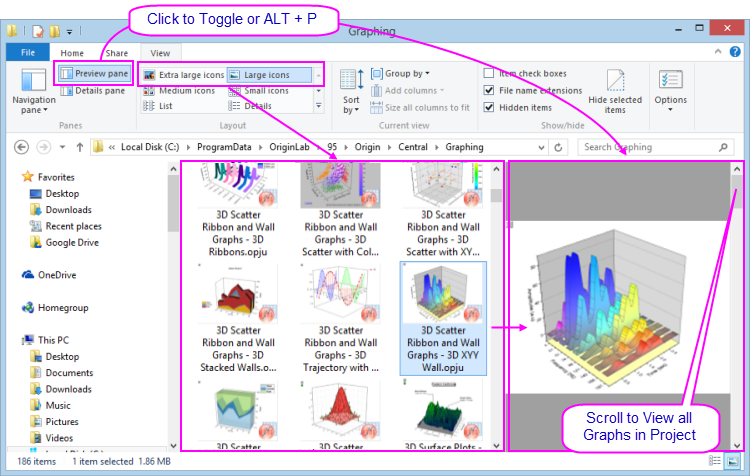

Mit dem Windows-Dateiexplorer eine Vorschau der Projekte anzeigen
Windows-File-Explorer-Preview
Sie können den Windows-Dateiexplorer (zuvor "Windows Explorer") verwenden, um Grafiken in einer Projektdatei als Vorschau anzuzeigen.
-
- 
- Die großen bzw. extragroßen Symbole des Windows Explorer (klicken Sie mit der rechten Maustaste auf den Datei-Explorer und wählen Sie Ansicht: Große Symbole bzw. Extragroße Symbole oder im Explorer-Menü Ansicht) zeigen ein Bild des letzten aktiven Diagramms, bevor die Projektdatei gespeichert wurde.
- Öffnen Sie das Vorschaufeld (ALT + P) und scrollen Sie durch alle Grafiken in der Projektdatei.